Change analysis for Rwanda for PRIMAP-hist v2.6.1_final compared to
v2.6_final
Overview over
emissions by sector and gas
The following figures show the aggregate national total emissions
excluding LULUCF AR6GWP100 for the country reported priority scenario.
The dotted linesshow the v2.6_final data.
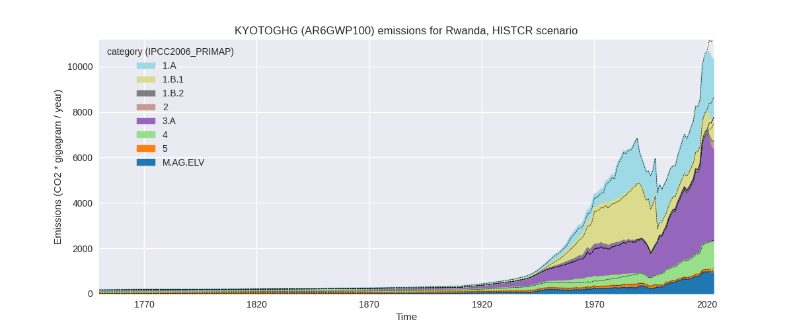
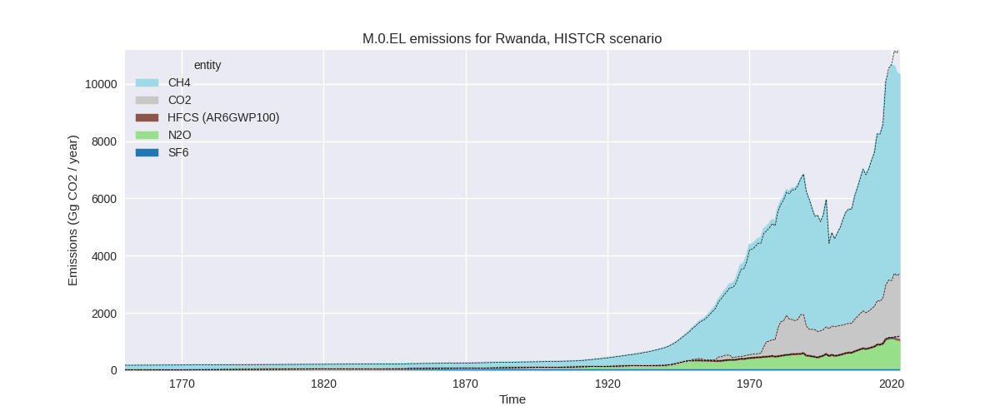
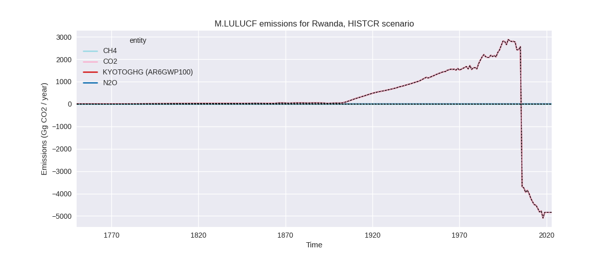
The following figures show the aggregate national total emissions
excluding LULUCF AR6GWP100 for the third party priority scenario. The
dotted linesshow the v2.6_final data.
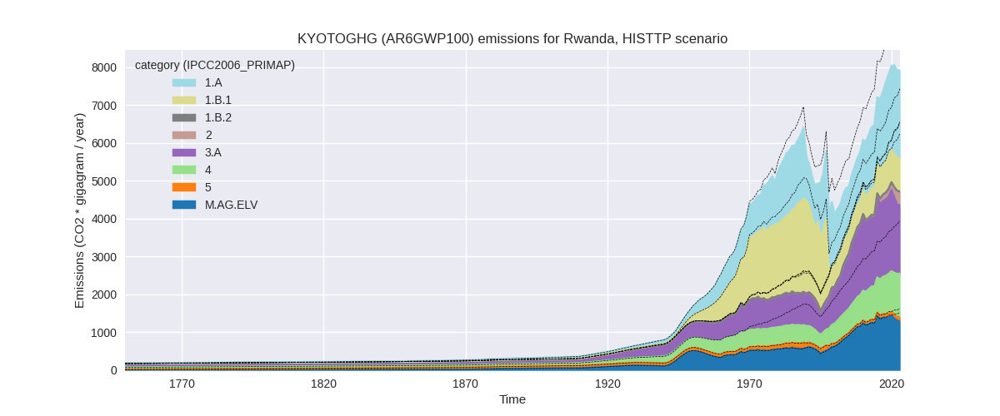
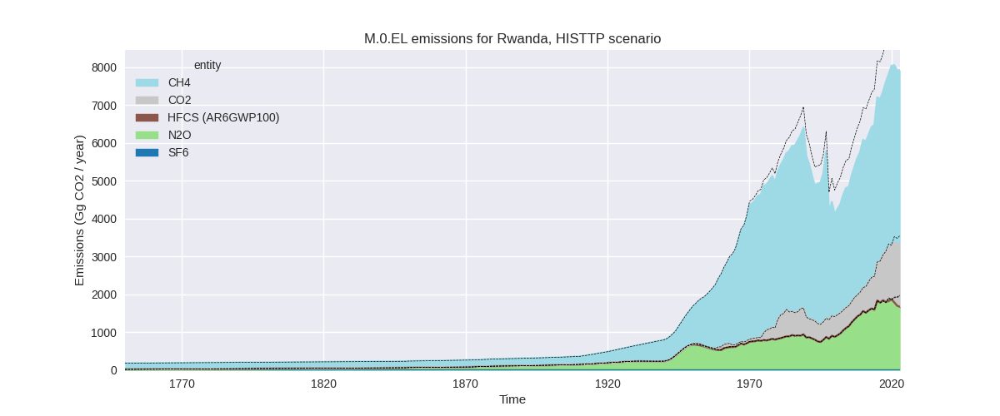
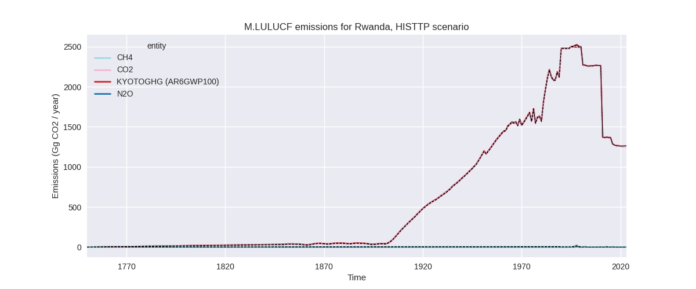
Overview over changes
In the country reported priority scenario we have the following
changes for aggregate Kyoto GHG and national total emissions excluding
LULUCF (M.0.EL):
- Emissions in 2023 have changed by -9.3%% (-1059.26 Gg CO2 / year)
- Emissions in 1990-2023 have changed by -1.2%% (-83.76 Gg CO2 / year)
In the third party priority scenario we have the following changes
for aggregate Kyoto GHG and national total emissions excluding LULUCF
(M.0.EL):
- Emissions in 2023 have changed by -18.8%% (-1829.43 Gg CO2 / year)
- Emissions in 1990-2023 have changed by -12.5%% (-835.18 Gg CO2 / year)
Most
important changes per scenario and time frame
In the country reported priority scenario the
following sector-gas combinations have the highest absolute impact on
national total KyotoGHG (AR6GWP100) emissions in 2023
(top 5):
- 1: 3.A, CH4 with -993.21 Gg CO2 / year (-19.7%)
- 2: M.AG.ELV, N2O with -90.27 Gg CO2 / year (-16.3%)
- 3: 2, CO2 with 89.68 Gg CO2 / year (38.2%)
- 4: 3.A, N2O with -60.45 Gg CO2 / year (-53.6%)
- 5: 1.B.2, CH4 with -18.69 Gg CO2 / year (-86.7%)
In the country reported priority scenario the
following sector-gas combinations have the highest absolute impact on
national total KyotoGHG (AR6GWP100) emissions in
1990-2023 (top 5):
- 1: 3.A, CH4 with -71.14 Gg CO2 / year (-2.7%)
- 2: M.AG.ELV, N2O with -6.80 Gg CO2 / year (-2.2%)
- 3: 4, CH4 with -5.87 Gg CO2 / year (-1.0%)
- 4: 2, CO2 with 5.21 Gg CO2 / year (5.5%)
- 5: 3.A, N2O with -4.60 Gg CO2 / year (-7.6%)
In the third party priority scenario the following
sector-gas combinations have the highest absolute impact on national
total KyotoGHG (AR6GWP100) emissions in 2023 (top
5):
- 1: 4, CH4 with -1156.51 Gg CO2 / year (-53.3%)
- 2: 3.A, CH4 with -421.63 Gg CO2 / year (-19.7%)
- 3: M.AG.ELV, N2O with -228.33 Gg CO2 / year (-16.3%)
- 4: 3.A, N2O with -93.52 Gg CO2 / year (-53.6%)
- 5: 2, CO2 with 78.31 Gg CO2 / year (29.8%)
In the third party priority scenario the following
sector-gas combinations have the highest absolute impact on national
total KyotoGHG (AR6GWP100) emissions in 1990-2023 (top
5):
- 1: 4, CH4 with -786.11 Gg CO2 / year (-55.8%)
- 2: 3.A, CH4 with -30.19 Gg CO2 / year (-2.2%)
- 3: M.AG.ELV, N2O with -17.35 Gg CO2 / year (-1.9%)
- 4: 3.A, N2O with -7.12 Gg CO2 / year (-8.2%)
- 5: 2, CO2 with 4.04 Gg CO2 / year (4.7%)
Notes on data changes
Here we list notes explaining important emissions changes for the
country.
- No new country reported data has been included. Country reported
data covers only 2006-2018 thus the third party data has a high
influence on the CR time-series.
- The main changes in the CR scenario are from updated FAO data where
the years after 2018 have high changes.
- In the TP scenario the changes are for similar sectors with the
addition of a high reduction of waste CH4 emissions from EDGAR
data.
Changes by sector and gas
For each scenario and time frame the changes are displayed for all
individual sectors and all individual gases. In the sector plot we use
aggregate Kyoto GHGs in AR6GWP100. In the gas plot we usenational total
emissions without LULUCF.
country reported scenario
2023
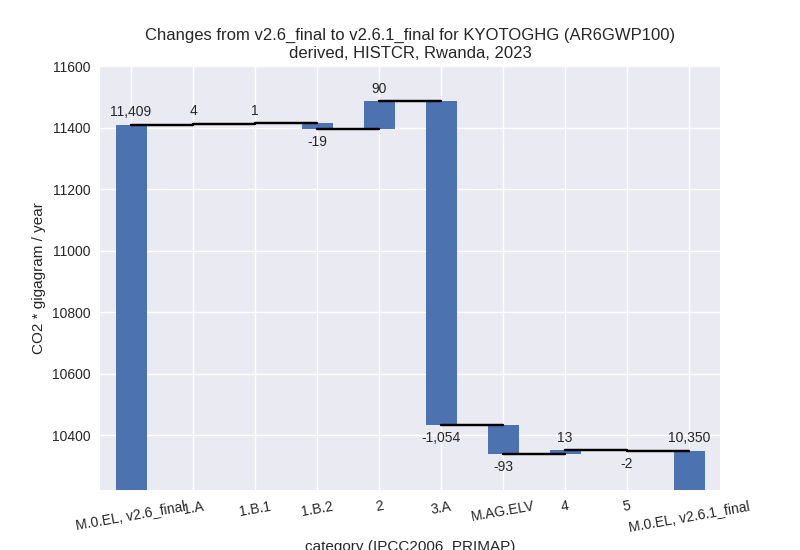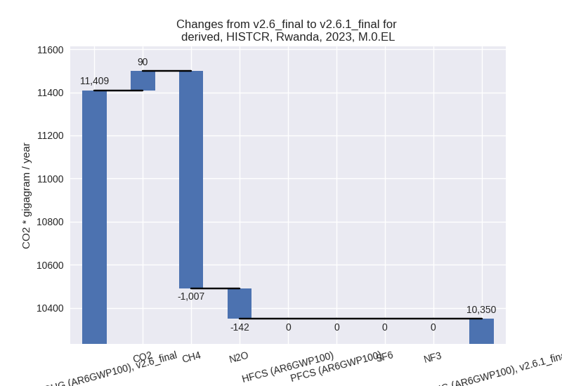
1990-2023
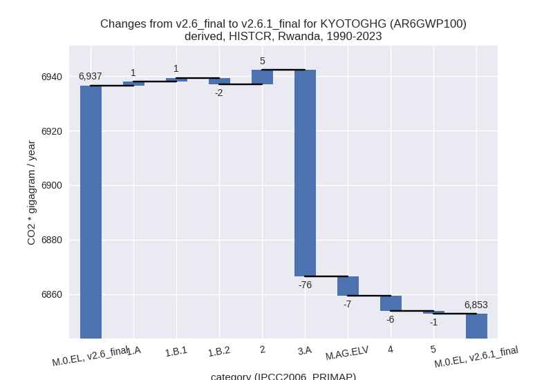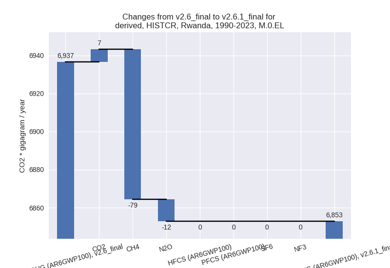
third party scenario
2023
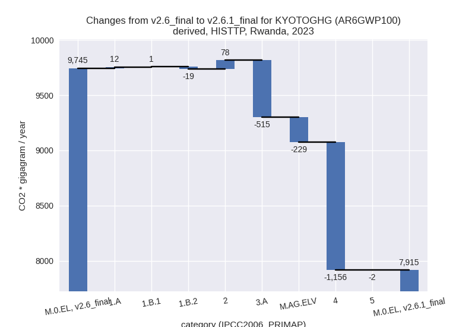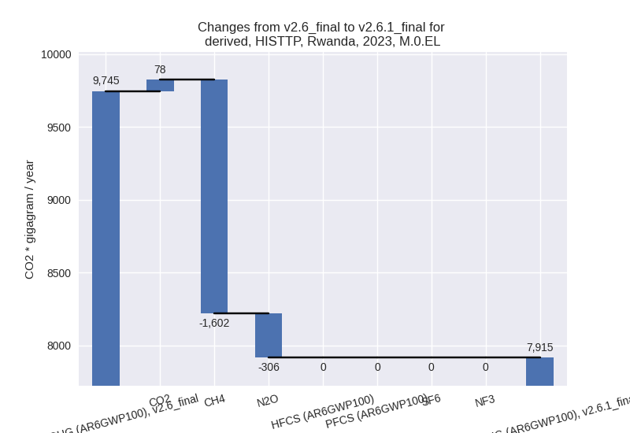
1990-2023
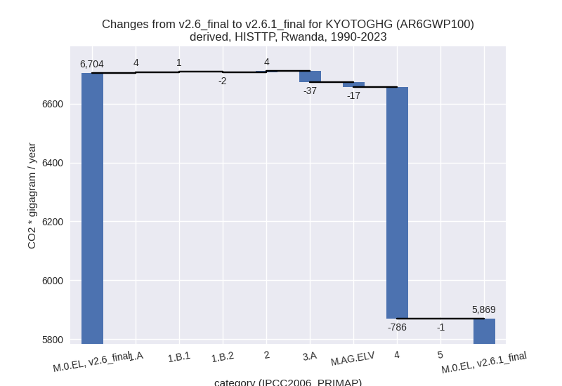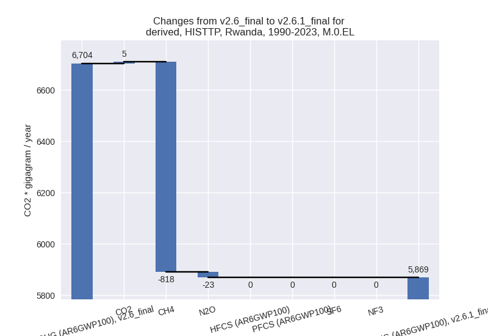
Detailed changes for the
scenarios:
country reported scenario
(HISTCR):
Most important changes
per time frame
For 2023 the following sector-gas combinations have
the highest absolute impact on national total KyotoGHG (AR6GWP100)
emissions in 2023 (top 5):
- 1: 3.A, CH4 with -993.21 Gg CO2 / year (-19.7%)
- 2: M.AG.ELV, N2O with -90.27 Gg CO2 / year (-16.3%)
- 3: 2, CO2 with 89.68 Gg CO2 / year (38.2%)
- 4: 3.A, N2O with -60.45 Gg CO2 / year (-53.6%)
- 5: 1.B.2, CH4 with -18.69 Gg CO2 / year (-86.7%)
For 1990-2023 the following sector-gas combinations
have the highest absolute impact on national total KyotoGHG (AR6GWP100)
emissions in 1990-2023 (top 5):
- 1: 3.A, CH4 with -71.14 Gg CO2 / year (-2.7%)
- 2: M.AG.ELV, N2O with -6.80 Gg CO2 / year (-2.2%)
- 3: 4, CH4 with -5.87 Gg CO2 / year (-1.0%)
- 4: 2, CO2 with 5.21 Gg CO2 / year (5.5%)
- 5: 3.A, N2O with -4.60 Gg CO2 / year (-7.6%)
Changes in the main sectors for aggregate KyotoGHG (AR6GWP100)
are
- 1: Total sectoral emissions in 2022 are 3595.21 Gg
CO2 / year which is 34.8% of M.0.EL emissions. 2023 Emissions have
changed by -0.4% (-13.10 Gg CO2 /
year). 1990-2023 Emissions have changed by 0.0% (0.49 Gg CO2 / year).
- 2: Total sectoral emissions in 2022 are 341.46 Gg
CO2 / year which is 3.3% of M.0.EL emissions. 2023 Emissions have
changed by 35.5% (89.68 Gg CO2 /
year). 1990-2023 Emissions have changed by 5.1% (5.21 Gg CO2 / year). For 2023 the
changes per gas
are:
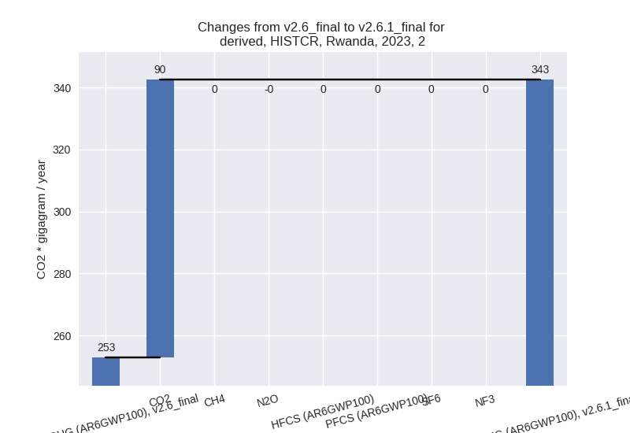
For 1990-2023 the changes per gas
are:
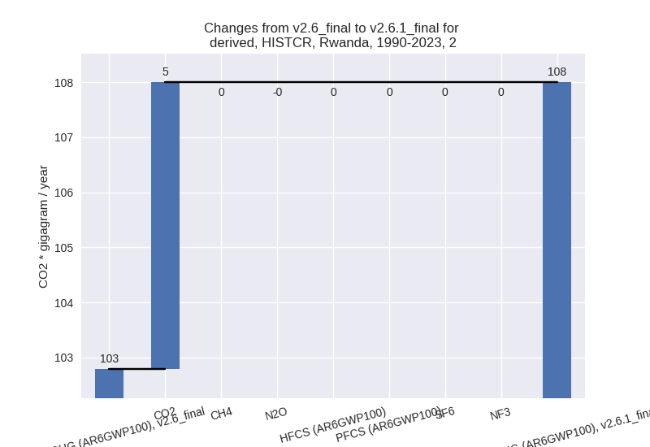
- M.AG: Total sectoral emissions in 2022 are 5045.32
Gg CO2 / year which is 48.9% of M.0.EL emissions. 2023 Emissions have
changed by -18.7% (-1147.00 Gg CO2 /
year). 1990-2023 Emissions have changed by -2.5% (-82.70 Gg CO2 / year). For 2023 the
changes per gas
are:
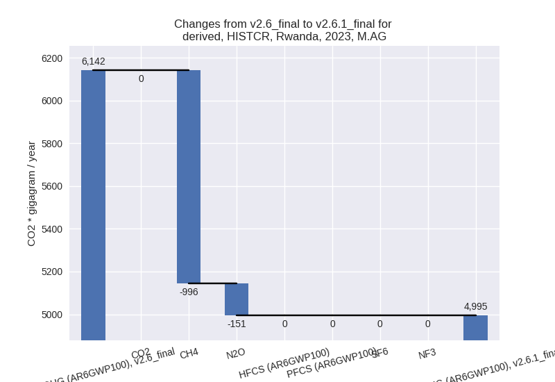
For 1990-2023 the changes per gas
are:
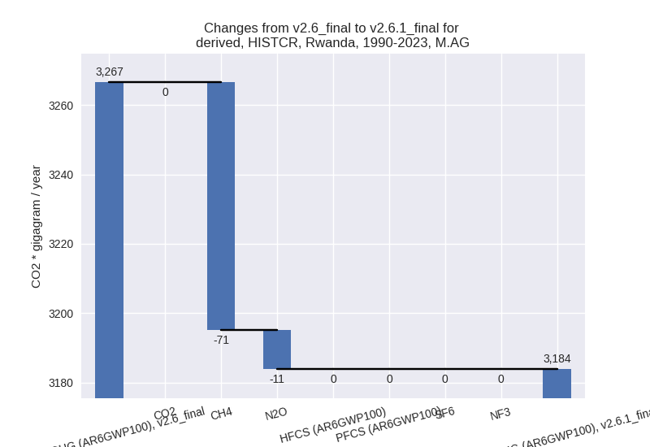
The changes come from the following subsectors:
- 3.A: Total sectoral emissions in 2022 are 4141.60
Gg CO2 / year which is 82.1% of category M.AG emissions. 2023 Emissions
have changed by -20.5% (-1053.66 Gg
CO2 / year). 1990-2023 Emissions have changed by -2.8% (-75.74 Gg CO2 / year). For 2023 the
changes per gas
are:
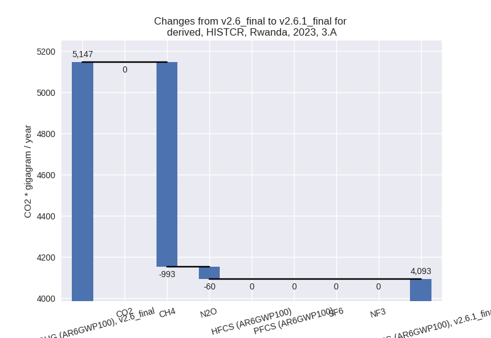
For 1990-2023 the changes per gas
are:
There is no subsector information available in PRIMAP-hist.
- M.AG.ELV: Total sectoral emissions in 2022 are
903.73 Gg CO2 / year which is 17.9% of category M.AG emissions. 2023
Emissions have changed by -9.4%
(-93.34 Gg CO2 / year). 1990-2023 Emissions have changed by -1.3% (-6.96 Gg CO2 / year). For 2023 the
changes per gas
are:
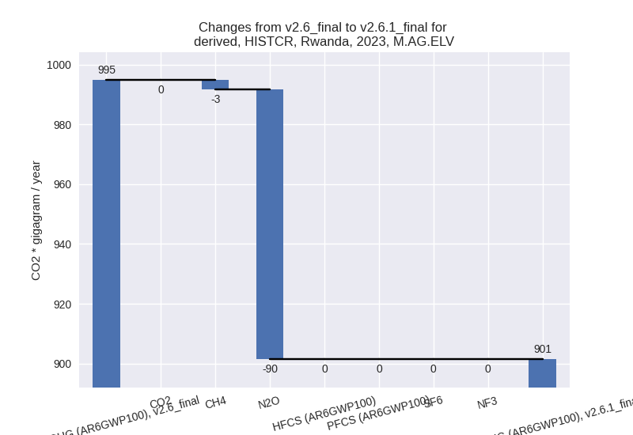
There is no subsector information available in PRIMAP-hist.
- 4: Total sectoral emissions in 2022 are 1239.61 Gg
CO2 / year which is 12.0% of M.0.EL emissions. 2023 Emissions have
changed by 1.0% (13.03 Gg CO2 /
year). 1990-2023 Emissions have changed by -0.8% (-5.74 Gg CO2 / year).
- 5: Total sectoral emissions in 2022 are 101.49 Gg
CO2 / year which is 1.0% of M.0.EL emissions. 2023 Emissions have
changed by -1.8% (-1.86 Gg CO2 /
year). 1990-2023 Emissions have changed by -1.1% (-1.01 Gg CO2 / year).
third party scenario (HISTTP):
Most important changes
per time frame
For 2023 the following sector-gas combinations have
the highest absolute impact on national total KyotoGHG (AR6GWP100)
emissions in 2023 (top 5):
- 1: 4, CH4 with -1156.51 Gg CO2 / year (-53.3%)
- 2: 3.A, CH4 with -421.63 Gg CO2 / year (-19.7%)
- 3: M.AG.ELV, N2O with -228.33 Gg CO2 / year (-16.3%)
- 4: 3.A, N2O with -93.52 Gg CO2 / year (-53.6%)
- 5: 2, CO2 with 78.31 Gg CO2 / year (29.8%)
For 1990-2023 the following sector-gas combinations
have the highest absolute impact on national total KyotoGHG (AR6GWP100)
emissions in 1990-2023 (top 5):
- 1: 4, CH4 with -786.11 Gg CO2 / year (-55.8%)
- 2: 3.A, CH4 with -30.19 Gg CO2 / year (-2.2%)
- 3: M.AG.ELV, N2O with -17.35 Gg CO2 / year (-1.9%)
- 4: 3.A, N2O with -7.12 Gg CO2 / year (-8.2%)
- 5: 2, CO2 with 4.04 Gg CO2 / year (4.7%)
Changes in the main sectors for aggregate KyotoGHG (AR6GWP100)
are
- 1: Total sectoral emissions in 2022 are 3172.66 Gg
CO2 / year which is 40.1% of M.0.EL emissions. 2023 Emissions have
changed by -0.2% (-5.83 Gg CO2 /
year). 1990-2023 Emissions have changed by 0.1% (2.63 Gg CO2 / year).
- 2: Total sectoral emissions in 2022 are 357.85 Gg
CO2 / year which is 4.5% of M.0.EL emissions. 2023 Emissions have
changed by 27.9% (78.31 Gg CO2 /
year). 1990-2023 Emissions have changed by 4.3% (4.04 Gg CO2 / year). For 2023 the
changes per gas
are:
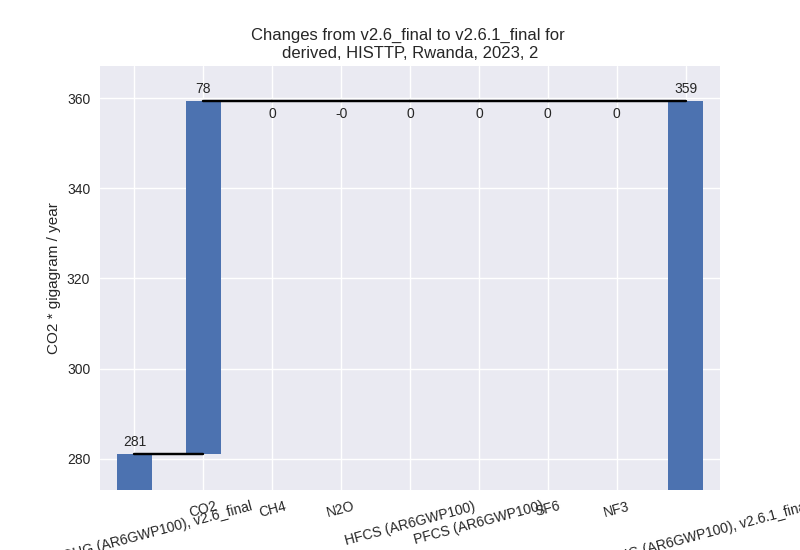
For 1990-2023 the changes per gas
are:
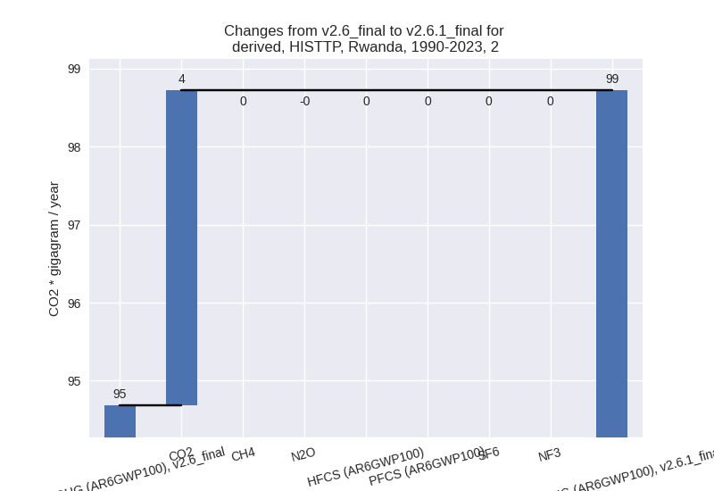
- M.AG: Total sectoral emissions in 2022 are 3140.12
Gg CO2 / year which is 39.7% of M.0.EL emissions. 2023 Emissions have
changed by -19.4% (-744.19 Gg CO2 /
year). 1990-2023 Emissions have changed by -2.2% (-54.66 Gg CO2 / year). For 2023 the
changes per gas
are:
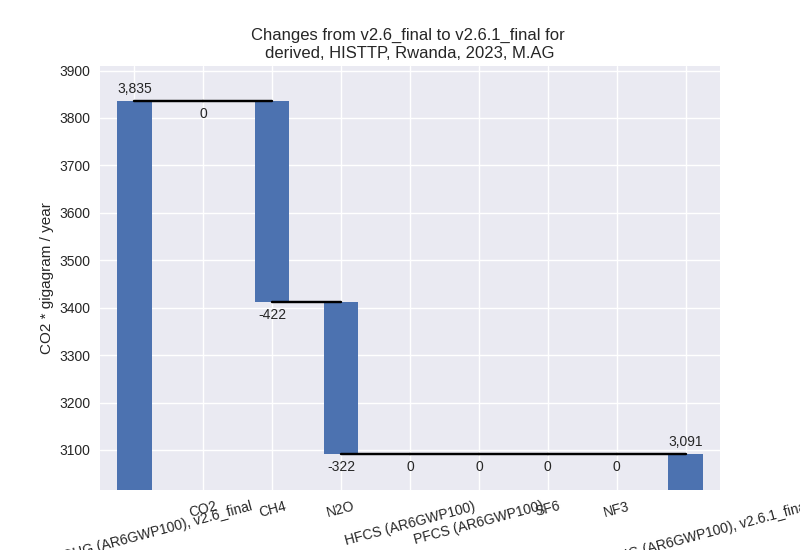
For 1990-2023 the changes per gas
are:
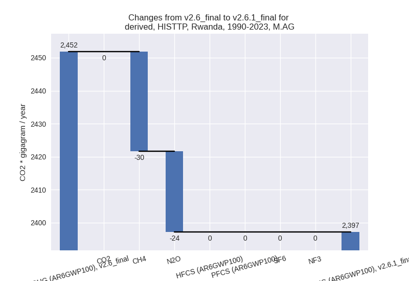
The changes come from the following subsectors:
- 3.A: Total sectoral emissions in 2022 are 1833.08
Gg CO2 / year which is 58.4% of category M.AG emissions. 2023 Emissions
have changed by -22.3% (-515.16 Gg
CO2 / year). 1990-2023 Emissions have changed by -2.5% (-37.31 Gg CO2 / year). For 2023 the
changes per gas
are:
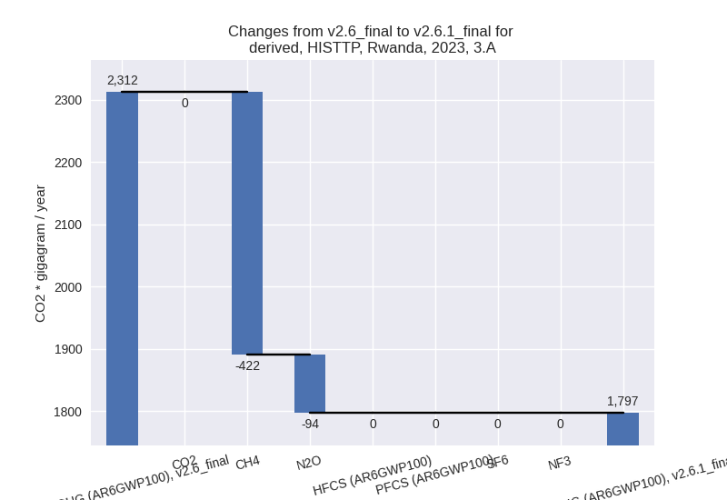
For 1990-2023 the changes per gas
are:
There is no subsector information available in PRIMAP-hist.
- M.AG.ELV: Total sectoral emissions in 2022 are
1307.05 Gg CO2 / year which is 41.6% of category M.AG emissions. 2023
Emissions have changed by -15.0%
(-229.03 Gg CO2 / year). 1990-2023 Emissions have changed by -1.8% (-17.35 Gg CO2 / year). For 2023 the
changes per gas
are:
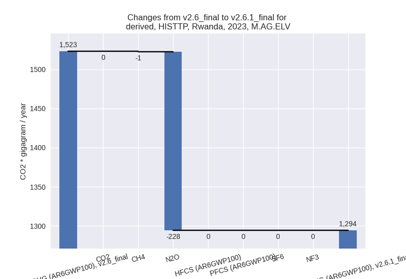
There is no subsector information available in PRIMAP-hist.
- 4: Total sectoral emissions in 2022 are 1131.38 Gg
CO2 / year which is 14.3% of M.0.EL emissions. 2023 Emissions have
changed by -49.9% (-1155.85 Gg CO2 /
year). 1990-2023 Emissions have changed by -52.5% (-786.17 Gg CO2 / year). For 2023
the changes per gas
are:
For 1990-2023 the changes per gas
are:
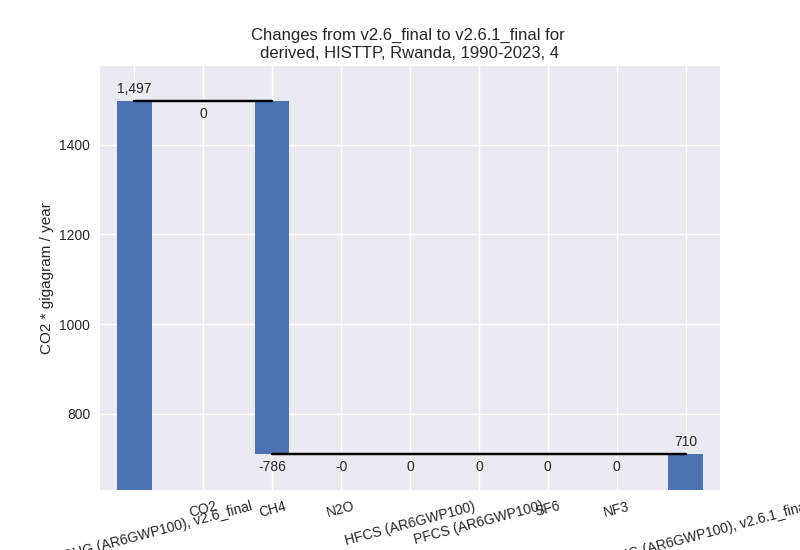
- 5: Total sectoral emissions in 2022 are 101.49 Gg
CO2 / year which is 1.3% of M.0.EL emissions. 2023 Emissions have
changed by -1.8% (-1.86 Gg CO2 /
year). 1990-2023 Emissions have changed by -1.1% (-1.01 Gg CO2 / year).